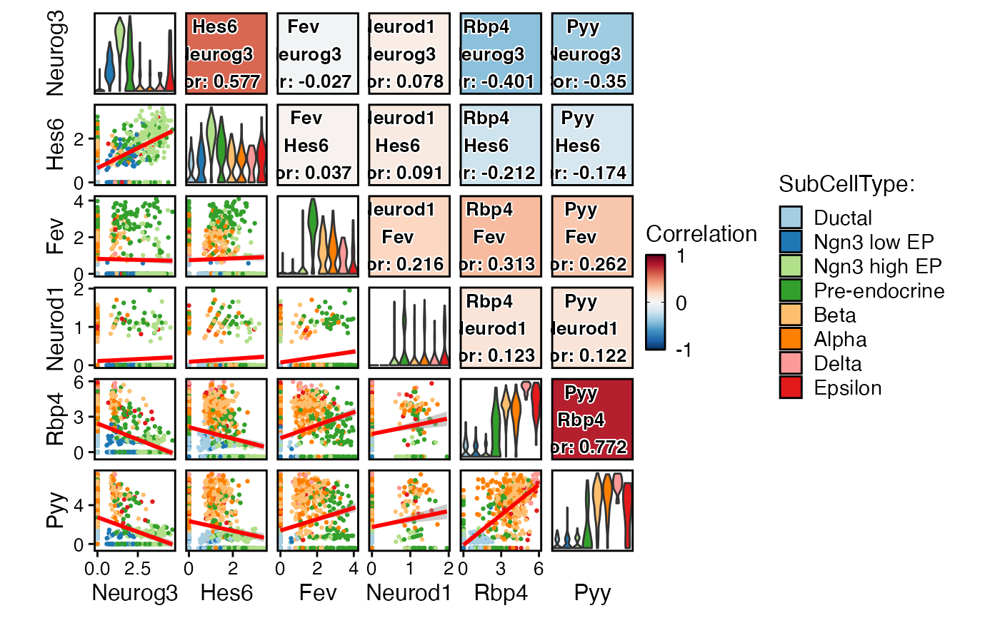
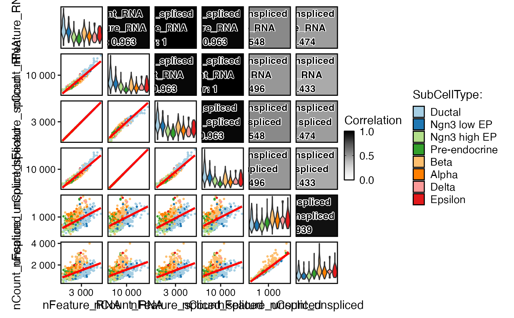
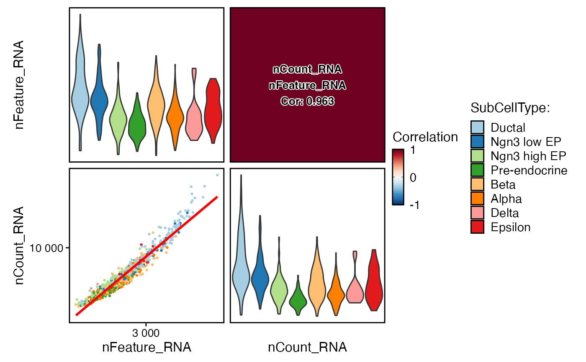

This function creates a correlation plot to visualize the pairwise correlations between selected features in a Seurat object.
Usage
FeatureCorPlot(
srt,
features,
group.by = NULL,
split.by = NULL,
cells = NULL,
layer = "data",
assay = NULL,
cor_method = "pearson",
adjust = 1,
margin = 1,
reverse = FALSE,
add_equation = FALSE,
add_r2 = TRUE,
add_pvalue = TRUE,
add_smooth = TRUE,
palette = "Paired",
palcolor = NULL,
cor_palette = "RdBu",
cor_palcolor = NULL,
cor_range = c(-1, 1),
pt.size = NULL,
pt.alpha = 1,
cells.highlight = NULL,
cols.highlight = "black",
sizes.highlight = 1,
alpha.highlight = 1,
stroke.highlight = 0.5,
calculate_coexp = FALSE,
raster = NULL,
raster.dpi = c(512, 512),
aspect.ratio = 1,
title = NULL,
subtitle = NULL,
legend.position = "right",
legend.direction = "vertical",
theme_use = "theme_scop",
theme_args = list(),
combine = TRUE,
nrow = NULL,
ncol = NULL,
byrow = TRUE,
force = FALSE,
seed = 11
)Arguments
- srt
A Seurat object.
- features
A character vector specifying the features to compare. Should be present in both the assay data and the metadata of the Seurat object.
- group.by
A character string specifying the column in the metadata to group cells by.
- split.by
A character string specifying the column in the metadata to split the plot by.
- cells
A character vector specifying the cells to include in the plot. If NULL (default), all cells will be included.
- layer
A character string specifying the layer in the Seurat object to use. Defaults to "data".
- assay
A character string specifying the assay to use. Defaults to the default assay in the Seurat object.
- cor_method
A character string specifying the correlation method to use. Can be "pearson" (default) or "spearman".
- adjust
The adjustment factor for the width of the violin plots. Defaults to 1.
- margin
The margin size for the plot. Defaults to 1.
- reverse
Whether to reverse the order of the features in the plot. Defaults to FALSE.
- add_equation
Whether to add the equation of the linear regression line to each scatter plot. Defaults to FALSE.
- add_r2
Whether to add the R-squared value of the linear regression line to each scatter plot. Defaults to TRUE.
- add_pvalue
Whether to add the p-value of the linear regression line to each scatter plot. Defaults to TRUE.
- add_smooth
Whether to add a smoothed line to each scatter plot. Defaults to TRUE.
- palette
A character string specifying the name of the color palette to use for the groups. Defaults to "Paired".
- palcolor
A character string specifying the color for the groups. Defaults to NULL.
- cor_palette
A character string specifying the name of the color palette to use for the correlation. Defaults to "RuBu".
- cor_palcolor
A character string specifying the color for the correlation. Defaults to "RuBu".
- cor_range
A two-length numeric vector specifying the range for the correlation.
- pt.size
The size of the points in the scatter plots. If NULL (default), the size will be automatically determined based on the number of cells.
- pt.alpha
A numeric value between 0 and 1 specifying the transparency of the points in the scatter plots. Defaults to 1.
- cells.highlight
A logical value or a character vector specifying the cells to highlight in the scatter plots. If TRUE, all cells will be highlighted. Defaults to NULL.
- cols.highlight
A character string specifying the color for the highlighted cells. Defaults to "black".
- sizes.highlight
The size of the highlighted cells in the scatter plots. Defaults to 1.
- alpha.highlight
A numeric value between 0 and 1 specifying the transparency of the highlighted cells in the scatter plots. Defaults to 1.
- stroke.highlight
The stroke size of the highlighted cells in the scatter plots. Defaults to 0.5.
- calculate_coexp
Whether to calculate the co-expression of selected features. Defaults to FALSE.
- raster
Whether to use raster graphics for scatter plots. Defaults to NULL.
- raster.dpi
A numeric vector specifying the dpi (dots per inch) resolution for raster graphics in the scatter plots. Defaults to c(512, 512).
- aspect.ratio
The aspect ratio of the scatter plots. Defaults to 1.
- title
A character string specifying the title for the correlation plot. Defaults to NULL.
- subtitle
A character string specifying the subtitle for the correlation plot. Defaults to NULL.
- legend.position
A character string specifying the position of the legend. Can be "right" (default), "left", "top", or "bottom".
- legend.direction
A character string specifying the direction of the legend. Can be "vertical" (default) or "horizontal".
- theme_use
A character string specifying the name of the theme to use for the plot. Defaults to "theme_scop".
- theme_args
A list of arguments to pass to the theme function. Defaults to an empty list.
- combine
Whether to combine the plots into a single plot. Defaults to TRUE.
- nrow
The number of rows in the combined plot. If NULL (default), the number of rows will be automatically determined.
- ncol
The number of columns in the combined plot. If NULL (default), the number of columns will be automatically determined.
- byrow
Whether to fill the combined plot byrow (top to bottom, left to right). Defaults to TRUE.
- force
Whether to force the creation of the plot, even if it contains more than 50 subplots. Defaults to FALSE.
- seed
The random seed for reproducibility. Defaults to 11.
Examples
data(pancreas_sub)
pancreas_sub <- standard_scop(pancreas_sub)
#> StandardPC_ 1
#> Positive: Aplp1, Cpe, Gnas, Fam183b, Map1b, Hmgn3, Pcsk1n, Chga, Tuba1a, Bex2
#> Syt13, Isl1, 1700086L19Rik, Pax6, Chgb, Scgn, Rbp4, Scg3, Gch1, Camk2n1
#> Cryba2, Pcsk2, Pyy, Tspan7, Mafb, Hist3h2ba, Dbpht2, Abcc8, Rap1b, Slc38a5
#> Negative: Spp1, Anxa2, Sparc, Dbi, 1700011H14Rik, Wfdc2, Gsta3, Adamts1, Clu, Mgst1
#> Bicc1, Ldha, Vim, Cldn3, Cyr61, Rps2, Mt1, Ptn, Phgdh, Nudt19
#> Smtnl2, Smco4, Habp2, Mt2, Col18a1, Rpl12, Galk1, Cldn10, Acot1, Ccnd1
#> StandardPC_ 2
#> Positive: Rbp4, Tagln2, Tuba1b, Fkbp2, Pyy, Pcsk2, Iapp, Tmem27, Meis2, Tubb4b
#> Pcsk1n, Dbpht2, Rap1b, Dynll1, Tubb2a, Sdf2l1, Scgn, 1700086L19Rik, Scg2, Abcc8
#> Atp1b1, Hspa5, Fam183b, Papss2, Slc38a5, Scg3, Mageh1, Tspan7, Ppp1r1a, Ociad2
#> Negative: Neurog3, Btbd17, Gadd45a, Ppp1r14a, Neurod2, Sox4, Smarcd2, Mdk, Pax4, Btg2
#> Sult2b1, Hes6, Grasp, Igfbpl1, Gpx2, Cbfa2t3, Foxa3, Shf, Mfng, Tmsb4x
#> Amotl2, Gdpd1, Cdc14b, Epb42, Rcor2, Cotl1, Upk3bl, Rbfox3, Cldn6, Cer1
#> StandardPC_ 3
#> Positive: Nusap1, Top2a, Birc5, Aurkb, Cdca8, Pbk, Mki67, Tpx2, Plk1, Ccnb1
#> 2810417H13Rik, Incenp, Cenpf, Ccna2, Prc1, Racgap1, Cdk1, Aurka, Cdca3, Hmmr
#> Spc24, Kif23, Sgol1, Cenpe, Cdc20, Hist1h1b, Cdca2, Mxd3, Kif22, Ska1
#> Negative: Anxa5, Pdzk1ip1, Acot1, Tpm1, Anxa2, Dcdc2a, Capg, Sparc, Ttr, Pamr1
#> Clu, Cxcl12, Ndrg2, Hnf1aos1, Gas6, Gsta3, Krt18, Ces1d, Atp1b1, Muc1
#> Hhex, Acadm, Spp1, Enpp2, Bcl2l14, Sat1, Smtnl2, 1700011H14Rik, Tgm2, Fam159a
#> StandardPC_ 4
#> Positive: Glud1, Tm4sf4, Akr1c19, Cldn4, Runx1t1, Fev, Pou3f4, Gm43861, Pgrmc1, Arx
#> Cd200, Lrpprc, Hmgn3, Ppp1r14c, Pam, Etv1, Tsc22d1, Slc25a5, Akap17b, Pgf
#> Fam43a, Emb, Jun, Krt8, Dnajc12, Mid1ip1, Ids, Rgs17, Uchl1, Alcam
#> Negative: Ins2, Ins1, Ppp1r1a, Nnat, Calr, Sytl4, Sdf2l1, Iapp, Pdia6, Mapt
#> G6pc2, C2cd4b, Npy, Gng12, P2ry1, Ero1lb, Adra2a, Papss2, Arhgap36, Fam151a
#> Dlk1, Creld2, Gip, Tmem215, Gm27033, Cntfr, Prss53, C2cd4a, Lyve1, Ociad2
#> StandardPC_ 5
#> Positive: Pdx1, Nkx6-1, Npepl1, Cldn4, Cryba2, Fev, Jun, Chgb, Gng12, Adra2a
#> Mnx1, Sytl4, Pdk3, Gm27033, Nnat, Chga, Ins2, 1110012L19Rik, Enho, Krt7
#> Mlxipl, Tmsb10, Flrt1, Pax4, Tubb3, Prrg2, Gars, Frzb, BC023829, Gm2694
#> Negative: Irx2, Irx1, Gcg, Ctxn2, Tmem27, Ctsz, Tmsb15l, Nap1l5, Pou6f2, Gria2
#> Ghrl, Peg10, Smarca1, Arx, Lrpap1, Rgs4, Ttr, Gast, Tmsb15b2, Serpina1b
#> Slc16a10, Wnk3, Ly6e, Auts2, Sct, Arg1, Dusp10, Sphkap, Dock11, Edn3
FeatureCorPlot(
pancreas_sub,
features = rownames(pancreas_sub)[1:5],
group.by = "SubCellType"
)

FeatureCorPlot(
pancreas_sub,
features = c(
"nFeature_RNA",
"nCount_RNA",
"nFeature_spliced",
"nCount_spliced",
"nFeature_unspliced",
"nCount_unspliced"
),
group.by = "SubCellType",
cor_palette = "Greys",
cor_range = c(0, 1)
)

FeatureCorPlot(
pancreas_sub,
features = c("nFeature_RNA", "nCount_RNA"),
group.by = "SubCellType",
add_equation = TRUE
)
